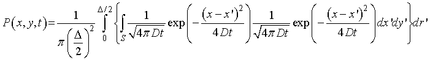

二次元拡散運動について-01
次に，二次元における拡散運動を考えていきましょう．
実際の実験では拡散現象は三次元で起こりますが，薄いレイヤー，カバーガラスで挟まれた溶液などは二次元で考えてもいい（と思います）ので，二次元の拡散運動さえ解ければほとんどの実験の現象を再現できます．
まずは，二次元空間において，円内に均一に分布する拡散運動を計算してみましょう．
上図のように，
直径Δに一様に分子が存在する．
R地点での分子の濃度の時間変化を求める
を考えましょう．
これはからはすべて，原点を中心とした拡散を考えます．
二次元においては，x，y軸にそれぞれ計算すればよく，

を計算すればよいのです．
ここで， 1/(π(Δ/2)＾2)は照射エリアで規格化のため．積分範囲，S，は照射エリア，を意味します．
このままでは計算がしづらいので，極座標変換します．